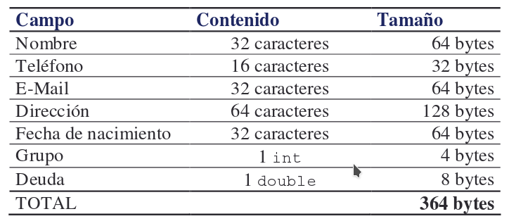

Los ficheros con los que hemos trabajado hasta ahora (ya sean ficheros de texto o ficheros binarios con objetos serializados) no resultan adecuados para muchas aplicaciones en las que hay que trabajar eficientemente con un subconjunto de los datos almacenados en disco.
En este tipo de aplicaciones, se ha de acceder a un registro concreto dentro de un fichero, por lo que los registros deben ser de tamaño fijo:

Como Java utiliza caracteres UNICODE, cada carácter de una cadena de caracteres ocupa 16 bits (2 bytes).
La clase RandomAccessFile nos permitirá representar un fichero de acceso aleatorio para el que nosotros definiremos el formato de sus registros.
Veamos un ejemplo:
Registro.java
import java.io.*; import java.text.DateFormat; public class Registro extends Contacto { public final static int DIM = 364; // Lectura public void read (RandomAccessFile file) throws IOException, java.text.ParseException { DateFormat df; setNombre ( readString (file, 32) ); setTelefono ( readString (file, 16) ); setEmail ( readString (file, 32) ); setDireccion ( readString (file, 64) ); df = DateFormat.getDateInstance(DateFormat.LONG); setNacimiento ( df.parse(readString(file,32)) ); setGrupo(file.readInt()); setDeuda(file.readDouble()); } private String readString (RandomAccessFile file, int dim) throws IOException { char campo[] = new char[dim]; for (int i=0; i<dim; i++) campo[i] = file.readChar(); return new String(campo).replace('\0',' '); } // Escritura public void write (RandomAccessFile file) throws IOException { DateFormat df; writeString (file, getNombre(), 32); writeString (file, getTelefono(), 16); writeString (file, getEmail(), 32); writeString (file, getDireccion(), 64); df = DateFormat.getDateInstance(DateFormat.LONG); writeString (file, df.format(getNacimiento()), 32); file.writeInt ( getGrupo() ); file.writeDouble ( getDeuda() ); } private void writeString (RandomAccessFile file, String str, int dim) throws IOException { StringBuffer buffer = new StringBuffer(); if (str!=null) buffer.append(str); buffer.setLength(dim); file.writeChars(buffer.toString()); } }
Contactos.java
import java.io.*; public class Contactos { // Fichero de acceso aleatorio private RandomAccessFile file; // Apertura del fichero public void abrir() throws IOException { file = new RandomAccessFile("clientes.dat","rw"); } // Cierre del fichero public void cerrar() throws IOException { if (file!=null) file.close(); } // Escribir un registro // en la posición actual del cursor public void escribir (Registro registro) throws IOException { if (file!=null) registro.write(file); } // Escribir un registro en una posición cualquiera public void escribir (Registro registro, int pos) throws IOException { if (file!=null) { file.seek ( (pos-1)*Registro.DIM ); escribir(registro); } } // Leer del fichero el registro // que se encuentra en la posición actual del cursor public Registro leer () { Registro registro = null; if (file!=null) { try { registro = new Registro(); registro.read(file); } catch (Exception error) { registro = null; } } return registro; } // Leer del fichero un registro cualquierta // (el parámetro indica la posición del registro) public Registro leer (int pos) throws IOException { if (file!=null) { file.seek ( (pos-1)*Registro.DIM ); } return leer(); } }